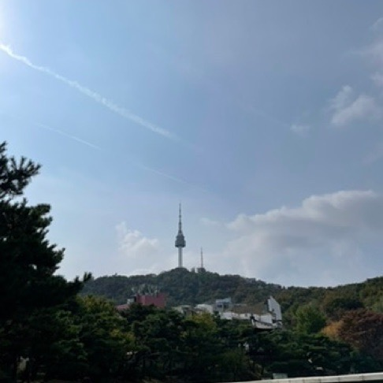
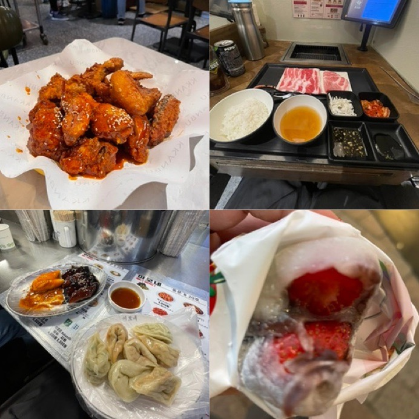
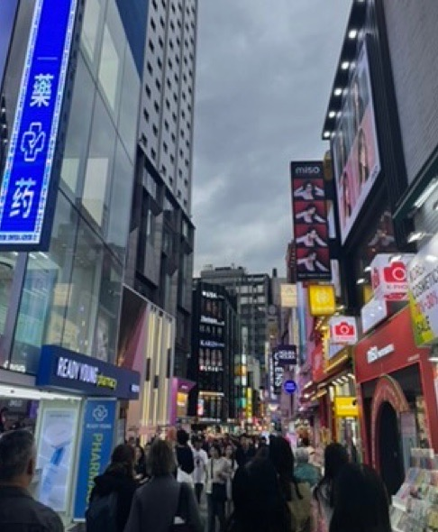

South Korea: A Weekend Trip to Seoul from Hong Kong
Seoul is one of the best weekend trips from Hong Kong. The city is walkable, the food is cheap and the night markets are attractions in their own right. It's also easy to plan, as long as you set up the right apps and think carefully about your airport transfer. This guide covers what to download, how to pay, and how to move around without wasting money.
Apps to download before your trip to Seoul
- Discover Seoul offers discounted tickets, attractions and passes. Check it before you pay full price anywhere.
- Naver Map. Google Maps doesn't work well in South Korea, so use Naver Map for walking and transit directions.
- K.Ride is the Kakao taxi app for foreigners. Use it for taxis instead of hailing on the street.
- Mobile T-money is the digital version of the transit card. It doesn't accept Visa cards. It works with Mastercard, UnionPay, JCB or Amex, so check which card you have.
Getting from Incheon Airport to Seoul
- Incheon Airport is far from the city. Plan your journey and your arrival time carefully, because the trip takes about an hour.
- Public transport doesn't run all night. If your flight lands late or leaves early, check the last and first trains before you book.
- Airport taxi transfers. If you use K.Ride for the airport transfer, book it at least 24 hours before the journey. You can't order it on arrival.
- Entry rules. Some nationalities need an online travel authorisation before they arrive, and rules vary. Check the official K-ETA page for your passport.
Paying for transport in Seoul with T-money
- T-money card. You can buy one at convenience stores and top it up with cash.
- Don't overload it. The city is very walkable, so you don't need a lot on your T-money card. Top up a small amount, and add more only when needed.
- Cash and cards. Cards work almost everywhere, but keep some cash for markets and small stalls.
Cheap things to do in Seoul for students
- Night markets are both attractions and cheap food spots. Go hungry, and try tteokbokki, fried chicken and hotteok.
- Gyeongbokgung Palace is the grandest of the old palaces, and Bukchon Hanok Village is a short walk away.
- Hongdae is the student and nightlife district, with street performers, cheap bars and late-night food.
- Myeongdong is the best-known shopping and street-food area.
- Namsan Tower gives you a view over the city, and the walk up is free.
- Han River parks. Locals picnic here in the evenings, and convenience-store snacks cost very little.


Where to stay in Seoul as a student: Hongdae or Myeongdong
- Hongdae and Myeongdong are popular with students. Both are central and well connected.
- Check the reviews. Look at the number of raters and the written comments, especially about cleanliness and noise.
- Hostels. They're cheaper than hotels and good for meeting other travellers, but check the room type before you book.

Student tip
Pack for the season. Winters are cold and summers are humid, so check the forecast.